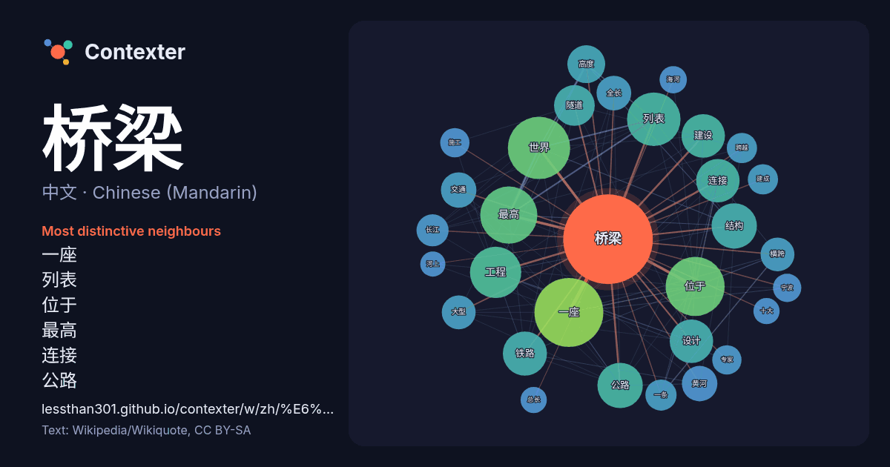

中文 · Chinese (Mandarin) · word of the day list
桥梁
“bridge” · The words found around it in 891 instances from Chinese (Mandarin) Wikipedia, Wikiquote.

Most distinctive neighbours
- 一座 52×
- 列表 43×
- 位于 33×
- 最高 28×
- 连接 26×
- 公路 26×
- 隧道 24×
- 结构 23×
- 工程 22×
- 建设 22×
- 黄河 21×
- 世界 21×
- 横跨 20×
- 铁路 20×
- 全长 19×
- 设计 18×
- 长江 17×
- 跨越 16×
- 一条 15×
- 施工 14×
× = how many times more often than in general Chinese (Mandarin) Wikipedia text.
Most frequent neighbours
- 一座 83
- 世界 68
- 位于 61
- 最高 57
- 列表 50
- 工程 46
- 中国 40
- 公路 36
- 结构 36
- 铁路 34
- 建设 33
- 设计 33
- 连接 33
- 隧道 29
- 高度 25
- 交通 22
- 黄河 22
- 全长 21
- 大型 20
- 横跨 20
In context
- 800英尺）的橋樑。收录的大部份橋是很多排名靠前的桥梁，並属于高架桥的范畴。列表中的数据尽可能按照桥梁结构最大连续悬空长度统计，并经由卫星图确认。目前並沒有统一的方法來測量橋樑的全長，有些是按桥梁连续悬空部分（地面或水面以上）的总长度来测量，有些是從上橋的坡道一路測量到出口處的下坡終點，還有些則是指橋樑 Wikipedia snippets · 世界大桥列表
- 桥梁在跨度和高度方面，不断刷新世界桥梁纪录。 据考古发掘分析，中国石器时代的桥梁为木梁桥。随着铁器时代的来临，加工大型石料成为可能達到的事，石材成为主要的建筑材料。其中，王莽时期修建的灞桥，以石为墩，以木为梁，是石木结合的代表作。 石拱桥的出现使中国古代桥梁 Wikipedia snippets · 中国桥梁
- 天津桥梁是天津市重要的交通出行方式，目前分为水桥和立交桥两种形式。由于天津地处九河下梢，拥有多条河道，因此，天津也建有大量各式各样的桥梁。近代的开埠，使天津拥有了一些西方开启式钢桥如吊旋的解放桥、金钢桥，平转的金汤桥，平拖的金华桥。桥梁专家茅以升说：“几乎全国的开合桥都集中在天津”。 Wikipedia snippets · 天津桥梁
- 桥梁应用了种类繁多的设计，其中许多都代表着现代桥梁工程的卓越成就，跻身世界最长悬索桥、斜拉桥、拱桥及最高桥梁的行列。 目前，自石鼓镇长江第一湾至出海口，长江干流已建成和在建的桥梁合计超150座，并仍在持续快速增长中。由于岷江口以上的长江干流不称长江，故这部分桥梁名称中也不含“长江”二字。 Wikipedia snippets · 长江桥隧列表
- 武汉市是长江和汉水的交汇之处，河湖众多，多建桥梁以便出行。 自下游至上游： 自上游至下游： 晴川桥 江汉桥 6号线隧道 月湖桥 12号线隧道（在建） 铁路桥 3号线隧道 知音桥（江汉二桥） 汉江湾桥（江汉七桥） 古田桥（江汉六桥） 永丰桥 长丰桥 四环汉江大桥 中法友谊大桥 蔡甸汉江大桥 蔡家湾大桥 Wikipedia snippets · 武汉桥梁与隧道列表
- 家渡建造1座钢质跨江浮船桥，并与德商签协，但因得不到政府支持而未果。抗日战争胜利后，茅以升等桥梁专家拟定多种越江交通方案，市政府拨款2亿元法币作建桥方案规划和设计经费。为配合上海石化建造，黄浦江上第一座桥梁松浦大桥于1976年建成通车。1991年12月1日，南浦大桥建成通车。1993年10月23日 Wikipedia snippets · 黄浦江桥梁列表
- 8万平方米。 1763年，清政府架设在乌鲁木齐河上的第一座桥——“虹桥”，这座用木头搭建而成，连接乌鲁木齐东西两个方向的桥梁经过多次重建，成为了后来的木质西大桥。1964年乌鲁木齐建成了第一座具有立交功能的火车南站立交桥。这座椭圆形立交桥于1960年2月施工，1961年1 Wikipedia snippets · 乌鲁木齐市
- 西雅圖市內有多座桥梁，用於穿越城市内的眾多水道和山丘。其中不乏在功能或工程上的创新性而拥有一定的历史意义的橋樑。截至2015年，西雅圖市内已經有十二座橋樑被联邦政府、市政府或兩者授予历史地位。西雅图市内也有一些全世界僅有的永久浮橋。 华盛顿湖和普吉特海湾分別位於西雅圖市的东部和西部，而兩者之间是通過一系列的运河和聯合湖（英语：Lake Wikipedia snippets · 西雅圖橋樑列表
More Chinese (Mandarin) words
Precomputed on 2026-10-09 with default settings (±5 words, medium corpus). The interactive map can refresh it with live data.